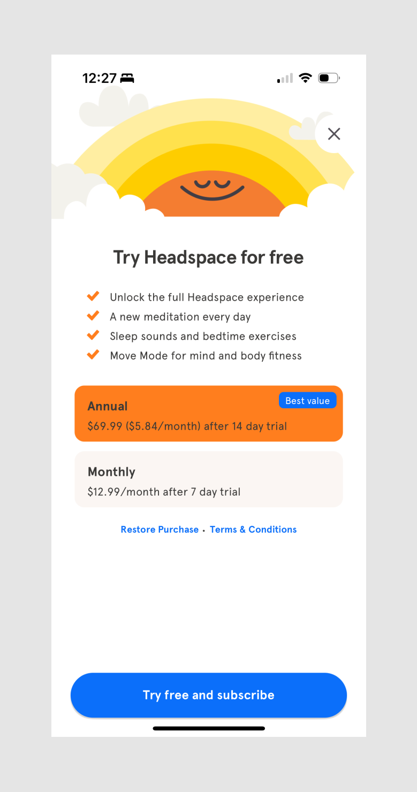

Color can also be used to create hierarchy. Bright or contrasting colors will naturally stand out and draw attention, while muted colors will recede into the background. The use of color can also work in tandem with size and placement to create even stronger hierarchies.
It's important to be selective when creating a color palette for your design. While intricate color schemes can be aesthetically pleasing, when there are too many colors competing for attention, it can be difficult for users to differentiate between important and less important elements. For many designs, it's a good idea to stick to just two primary colors and two secondary colors in order to create a balanced and user-friendly experience.
Here's an example of how Headspace uses a limited color palette, mainly consisting of white, black, blue, and orange, to create hierarchy:

Here, Headspace is using orange to highlight their preferred subscription option, and blue to emphasize their call to action. Everything else is white, grey, or black, which helps to reduce the importance of the other elements.
Ultimately, hierarchy is about guiding the viewer's eye to the most important parts of a design. By using a combination of size, placement, and color, designs can create effective hierarchies that help guide the user's eye through the screen.